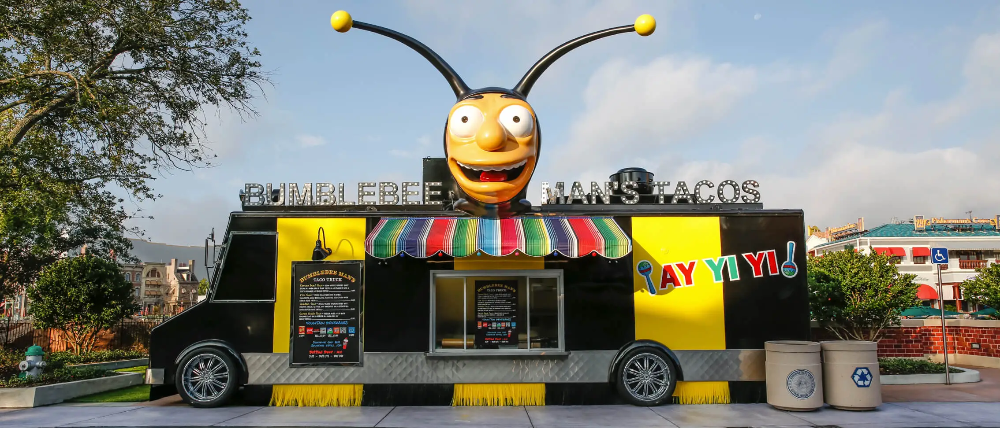

Lard Lad Donuts

"Mmmmm, donuts. Who doesn’t love ‘em? Towering over the landscape on Fast Food Boulevard is Springfield’s favorite purveyor of sweet circular treats. Lard Lad is pulling double duty to make a multitude of his cooked cake confections. Here you’ll find giant pink-iced donuts, Brain Freezin’ D’oh-Nut Sundaes, and more."
Bumblebee Mans Taco Truck

"Brought to you by Bumblebee Man, the star of Channel Ocho's variety show, this taco truck cooks up a variety of the best Mexican street food that Springfield’s ever tasted. Choose from Korean beef, carne asada, and chicken tacos, as well as Duff Beer, Buzz Cola, and Coca-Cola fountain drinks. It's muy bueno to the last chomp."